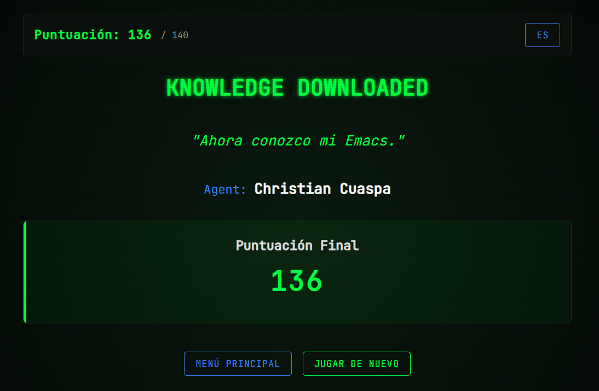
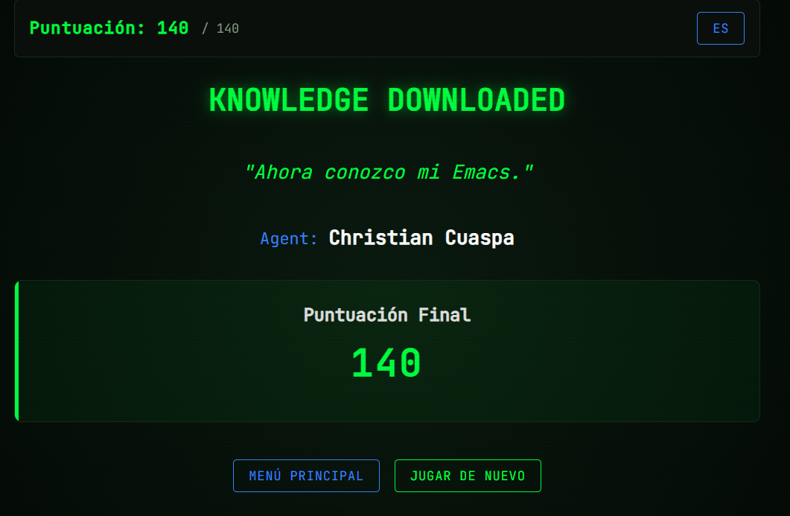
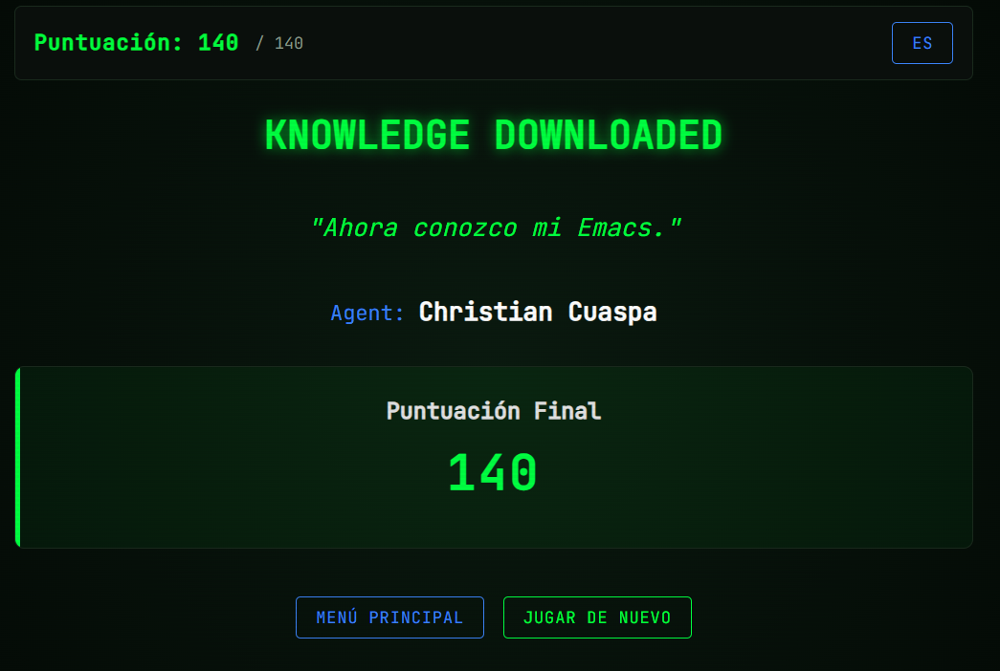

Taller de Configuracion de Entorno WSL
1. Objetivos
- Configurar y validar el entorno de trabajo para la asignatura de Arquitectura de Computadores en Linux o WSL.
- Verificar la instalacion de herramientas base: mamba/anaconda (Python), Emacs y \LaTeX.
- Documentar evidencias tecnicas mediante capturas y comandos ejecutados.
2. Instrucciones
- Realice todas las actividades en Linux o en WSL.
- En cada sección ejecute los comandos solicitados y registre la salida en el bloque correspondiente.
- Guarde el archivo y exporte a pdf con el comando `org-latex-export-to-pdf`.
- Verifique que estén todos los nombres de los integrantes del grupo de trabajo. Los grupos para este trabajo están en Equipos de Trabajo.
- Verifique que en las distintas secciones de este archivo esté identificado con nombre e email el aporte del estudiante.
Si require insertar una imagen, crear una carpeta images y colocar
la imagen dentro. Para llamar la imagen desde Emacs use C-c C-l y
busque el archivo o escriba:Puede insertar una imagen con la sintaxis:
[[./images/image1.jpg]]
3. Actividades
3.1. Configuración de WSL con Ubuntu, \LaTeX, Python e Emacs
Verificacion de entorno mamba/anaconda
- Active WSL (si aplica) y su entorno de trabajo.
- Ejecute
mamba infoconC-c C-cdentro del bloque de código. - Si el comando falla, active un entorno con
mamba activate iccd332e intente de nuevo.
mamba info
libmamba version : 2.5.0 mamba version : 2.5.0 curl version : libcurl/8.19.0 OpenSSL/3.6.1 zlib/1.3.2 zstd/1.5.7 libssh2/1.11.1 nghttp2/1.68.1 mit-krb5/1.22.2 libarchive version : libarchive 3.8.6 zlib/1.3.2 liblzma/5.8.2 bz2lib/1.0.8 liblz4/1.10.0 libzstd/1.5.7 liblzo2/2.10 openssl/3.5.5 libb2/bundled envs directories : /home/christian_cuaspa/miniforge3/envs package cache : /home/christian_cuaspa/miniforge3/pkgs /home/christian_cuaspa/.mamba/pkgs environment : iccd332 (active) env location : /home/christian_cuaspa/miniforge3/envs/iccd332 user config files : /home/christian_cuaspa/.mambarc populated config files : /home/christian_cuaspa/miniforge3/.condarc virtual packages : __unix=0=0 __linux=6.6.87=0 __glibc=2.39=0 __archspec=1=x86_64_v3 channels : https://conda.anaconda.org/conda-forge/linux-64 https://conda.anaconda.org/conda-forge/noarch base environment : /home/christian_cuaspa/miniforge3 platform : linux-64
Verificacion de Python
- Active el entorno
iccd332para abrir Emacs conmamba activate iccd332. - Ejecute
python --versionen la consola y desde Emacs.
python --version
Python 3.14.4
- Active el entorno
Verificacion de Emacs Ejecute
emacs --versionen la consola y desde Emacs.emacs --version
GNU Emacs 29.3 Copyright (C) 2024 Free Software Foundation, Inc. GNU Emacs comes with ABSOLUTELY NO WARRANTY. You may redistribute copies of GNU Emacs under the terms of the GNU General Public License. For more information about these matters, see the file named COPYING.
Verificacion de LaTeX Ejecute
latex --versionen la consola y desde Emacs.latex --version
pdfTeX 3.141592653-2.6-1.40.25 (TeX Live 2023/Debian) kpathsea version 6.3.5 Copyright 2023 Han The Thanh (pdfTeX) et al. There is NO warranty. Redistribution of this software is covered by the terms of both the pdfTeX copyright and the Lesser GNU General Public License. For more information about these matters, see the file named COPYING and the pdfTeX source. Primary author of pdfTeX: Han The Thanh (pdfTeX) et al. Compiled with libpng 1.6.43; using libpng 1.6.43 Compiled with zlib 1.3; using zlib 1.3 Compiled with xpdf version 4.04
- Registro de problemas y solucion aplicada
Complete la siguiente tabla si tuvo errores durante la configuracion:
| Herramienta | Problema observado | Solucion aplicada |
|---|---|---|
| Emacs(Christian Cuaspa) | Ejecución de C-c C-c fallida | Ejecucion Eval expresion y luego introducir (org-babel-do-load-languages 'org-babel-load-languages '((shell . t) (python . t))) |
3.2. Comandos Emacs Tutorial
Seguir el tutorial integrado en Emacs al respecto de la navegación y operaciones más frecuentes. El tutorial puede ser accedido en Español utilizando el comando:
M-x help-with-tutorial-spec-language
Realice los ejercicios del tutorial (al menos un 80% del texto) y complete la siguiente tabla con los comandos que considere de mayor interés. Verifique que en la parte superior se active el menú de tabla. Dentro de la región de la tabla puede dar C-c C-c para alinear automáticamente la tabla al contenido del texto que escriba. Para generar una nueva fila escriba presione la tecla TAB
<Estudiante A> Christian Cuaspa
| Comando | Descripción | Comando | Descripción |
|---|---|---|---|
M-d |
Elimina la siguiente palabra despues del cursor | C-<SPC> |
Selciona el contenido desde la posición actual del cursor hasta su nueva posición |
M-k |
Elimina hasta el final de una oración | C-w |
Elimina lo seleccionado con C-<SPC> |
C-/ |
Deshace una acción | C-x C-b |
Muestra la lista de buffers |
<Estudiante B>
| Comando | Descripción | Comando | Descripción |
|---|---|---|---|
C-c C-e # latex |
Insertar template de latex | C-x C-s |
Guardar los cambios en el archivo |
<Estudiante C>
| Comando | Descripción | Comando | Descripción |
|---|---|---|---|
C-c C-e # latex |
Insertar template de latex | C-x C-s |
Guardar los cambios en el archivo |
<Estudiante D>
| Comando | Descripción | Comando | Descripción |
|---|---|---|---|
C-c C-e # latex |
Insertar template de latex | C-x C-s |
Guardar los cambios en el archivo |
3.3. Comandos Emacs Juego
En la anterior sección usted revisó los comandos de mayor interés sobre la manipulación de Emacs. Es hora de poner en práctica sus conocimientos. Realice unas 3 visitas al juego Emacs-Trainer y apunte en la siguiente tabla su puntaje.
Estudiante A:
| iteración | Puntaje |
|---|---|
| 1 | 136 |
| 2 | 140 |
| 3 | 140 |



Estudiante B:
| iteración | Puntaje |
|---|---|
| 1 | |
| 2 | |
| 3 |
[[./estudianteB-game.png]]
Estudiante C:
| iteración | Puntaje |
|---|---|
| 1 | |
| 2 | |
| 3 |
[[./estudianteC-game.png]]
Estudiante D:
| iteración | Puntaje |
|---|---|
| 1 | |
| 2 | |
| 3 |
[[./estudianteD-game.png]]
3.4. Usando Emacs para tener Ayuda sobre Emacs
¿Qué comandos le resultan más fáciles de usar y cuáles le son más extraños? Identifique 4 comandos que le sean fáciles y 4 que le resulten complicados. Revise qué dice la ayuda de Emacs sobre cada comando y escriba en sus palabras el para qué sirve.
Para consultar lo que hace un comando ejecute:
C-h k- Emacs le preguntara cuál es la combinación de la que requiere
ayuda. Presione las teclas del comando. Por ejemplo,
C-x C-f - Emacs abrirá un nuevo buffer con la descripción del comando.
- Cambie al buffer de la ayuda con
C-x o - Seleccione el primer parrafo de ayuda ubicando el cursor al inicio
del parrafo y activando la marcación de texto con
C-SPC. Seleccione avanzando por palabrasM-fo directamente toda la lineaC-e - Una vez seleccionado, copie el texto con
M-w. - Regrese al buffer anterior con
C-x o. - Pegue el texto en <Pegar lo que dice el…> con
C-y
Comandos Fáciles
- Christian Cuaspa: <C-x 1>. <C-x 1 runs the command delete-other-windows (found in global-map), which is an interactive native-compiled Lisp function in ‘window.el’.>
- Estudiante B: <Poner el comando>. <Pegar lo que dice el primer párrafo de la ayuda>
- Estudiante C: <Poner el comando>. <Pegar lo que dice el primer párrafo de la ayuda>
- Estudiante D: <Poner el comando>. <Pegar lo que dice el primer párrafo de la ayuda>
Comandos Difíciles
- Estudiante A: <M-x recover-file>. <recover-file is an interactive native-compiled Lisp function in ‘files.el’.>
- Estudiante B: <Poner el comando>. <Pegar lo que dice el primer párrafo de la ayuda>
- Estudiante C: <Poner el comando>. <Pegar lo que dice el primer párrafo de la ayuda>
- Estudiante D: <Poner el comando>. <Pegar lo que dice el primer párrafo de la ayuda>
4. Equipo de Trabajo
Complete la información de los integrantes de grupo e indique el líder de grupo.
| Nombre | Rol | |
|---|---|---|
| Christian Cuaspa | christian.cuaspa@epn.edu.ec | líder |
| Danny Lanchimba | danny.lanchimba@epn.edu.ec | colaborador |
| Dylan Zuñiga | dylan.zuniga@epn.edu.ec | colaborador |
| Steven Echeverria | steven.echeverria@epn.edu.ec | colaborador |
5. Verificación de Entregables [33%]:
Ejecute C-c C-c sobre los ítems de tarea según se hayan cumplido o
no. Si un ítem no pudo realizarse apunte en la siguiente sección las
razones al respecto.
[X]Verificación de configuración de entorno WSL y paquetes del curso.[ ]Tutorial de Comandos Emacs realizado.[ ]Captura de Imágenes y puntajes de Emacs Trainer App.[ ]Usando Emacs para tener ayuda sobre Emacs[ ]Verifique que estén los nombres de los integrantes del equipo e identificado el líder.[ ]Revisión de ortografía conispellen el buffer[ ]Generación de Archivo PDFM-x org-latex-export-to-pdf
5.1. Problemas con la Tarea:
- Tarea \(X_1\) no pudo completarse debido a
- Tarea \(X_2\) no pudo completarse debido a